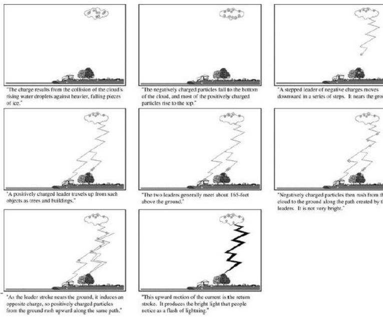
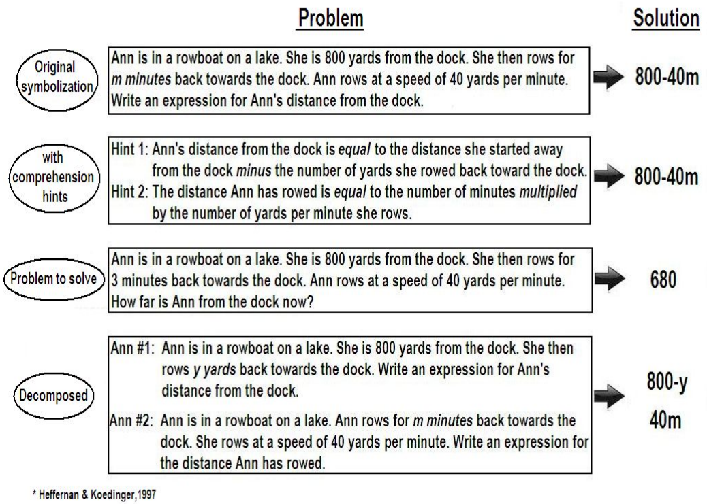
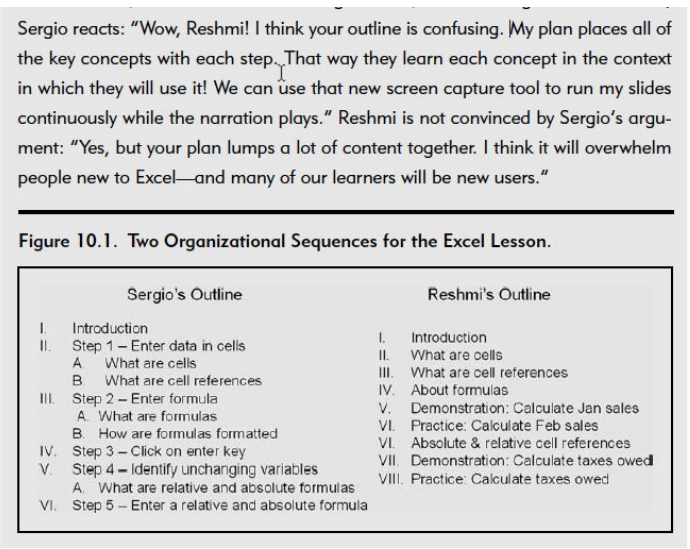
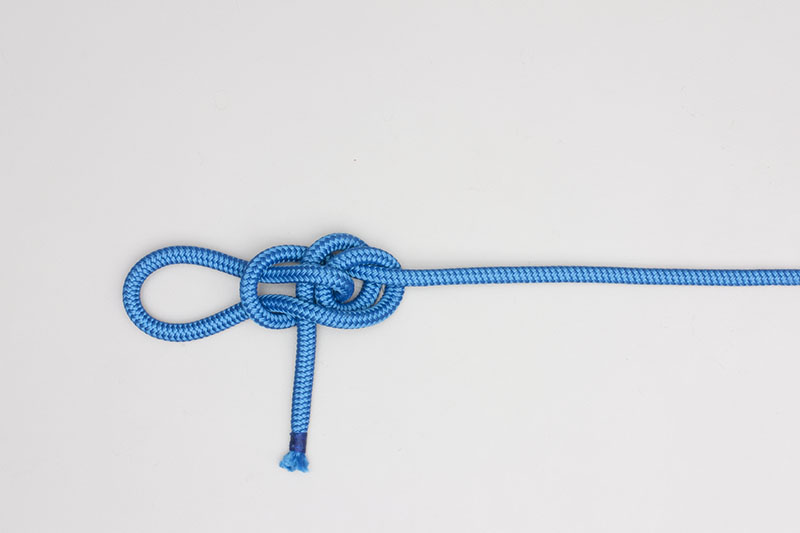

Jiajie Chen 11/12/2026
Segmenting
Pretraining
“I lost it at the pass-through.”
“I forgot how many wraps.”
“Which bight is which?”
“What’s the standing end?”
Warm-up
Segmenting
Pretraining
Group design
Wrap-up
what each principle is, and why it helps learning
when it’s been violated — and when it’s applied well
to decide whether, where and how to apply it
A
Let it “play” like a video — one continuous picture of the whole procedure.
B
Let learners move screen by screen, in small bites, at their own rate.

B
…when the content is complex.
1
Extraneous
2
Essential
(intrinsic)
3
Generative
(germane)
primarily
secondarily
If essential processing overloads, generative processing suffers
memory & fluency · induction & refinement · sense-making.

Which versions do students solve more often than the original?
Original
+ two comprehension hints
A problem to solve
Decomposed in two
40%
41%
63%
62%
The composition effect: the hard part is combining two steps into 800 − 40m.
800 − y and 40x → 800 − 40x
A
More story problems
B
Substitution practice: “Substitute 40x for y in 800 − y”
C
A glossary of the terms in the problem
D
A slower narrated video of a worked solution
A/B result: substitution + story practice beat story practice alone, in the same time. Segmenting can mean inventing a practice task aimed at the weak step.
A
Whether
Is the content complex and interrelated?
B
What
Which KCs — including the integrative “glue”?
C
Where
Cut segments to match those KCs.
D
All of the above.
Example: learning curves in the geometry-area study revealed a hidden skill — decomposition planning — which then got its own practice task.
Fold the rope into two bights: a free-end bight and a standing-end bight. Wrap the free end around the standing-end bight two times. Pass the free-end bight through the standing-end bight and tighten.
1
Make the two bights
ends with a checkpoint photo
2
Wrap twice
ends with a checkpoint photo
3
Pass through
ends with a checkpoint photo
the hard part
Which segment holds the hard part — and how would CTA tell you?
1 · Fold the rope into two bights: a free-end bight and a standing-end bight. 2 · Wrap the free end around the standing-end bight two times. 3 · Pass the free-end bight through the standing-end bight and tighten.
Three steps. Already well segmented?

Which outline is A? Which is B? Which suits learners new to Excel?
A
Teach content in the context of the procedure
B
Separate key concepts from the procedure
Sergio = A · Reshmi = B
For these learners: Reshmi’s. New users + complex content = too much essential processing at once.
It moves some essential processing earlier — out of the busiest moment.
“
If learners already know what upper esophageal sphincter means, they can spend their capacity on how it fits into the causal chain.
Which processing does it target?
Extraneous
Essential
Generative
primarily
secondarily
Use CTA: pretrain only the subtasks that are especially hard to learn.
PBL says whole task first. Pretraining says parts first. Which is right?
B
Always start with the whole task
A
Always pretrain the parts first
C
It depends — so do CTA.
Not especially hard? Skip pretraining. · Focused practice matters more than going first.
standing end
standing-end bight
free-end bight
free end
Would pretraining alone have fixed the problem?
No. The pacing and the pass-through still need their segments.
What did the warm-up assume you already knew?
A labeled photo of the two bights in two shades of red. Learners fold both on their own rope and name each one out loud.
Pretraining
1 opening screen
Name the two bights first.
Segmenting
3 parts
Bights · wrap twice · set the loop — each with a check.
Tie the Double Dragon Loop

Your goal
Tie a Double Dragon Loop — a fixed loop that won’t slip — on your own rope.
In this lesson
1 opening screen to learn the names
3 short steps, each with a check
About 3 minutes, at your own pace
Photo: Animated Knots
Start →
Before you start: meet the two bights
standing end
standing-end bight
free-end bight
free end
A bight is a U-turn in the rope. This knot uses two:
Free-end bight — near the loose end you tie with.
Standing-end bight — in the long part of the rope.
Fold both on your rope. Point to each and say its name.
Checkpoint: can you point to both bights without looking at the screen?
← Back
Real step-by-step photos: animatedknots.com/double-dragon-loop
Continue →
Segment 1 of 3 · Make the two bights
Near the free end, fold a U-turn: the free-end bight. Beside it, in the long part, fold the standing-end bight.
Checkpoint: point to each bight and say its name.
Photos: Animated Knots
← Back
Continue →
Segment 2 of 3 · Wrap twice
Take the free end around the standing-end bight twice. Push the free-end bight down through it.
Practice × 3: undo the last move and redo it three times before you continue.
Checkpoint: two wraps; the free-end bight pokes out underneath.
Photos: Animated Knots
← Back
Continue →
Segment 3 of 3 · Set the loop
Hold the loop and the standing end, then pull apart until the wraps tighten into a snug collar.
Checkpoint: tug the loop hard — the knot holds its shape.
Photos: Animated Knots
← Back
Done
You’re an e-learning design team. Your client needs a short online lesson that teaches novices to join two ropes. Here are your CTA results. Design the lesson your data calls for.
1
Sheet Bend
camping store
2
Carrick Bend
sailing club
3
Zeppelin Bend
rigging company
4
Square Knot
scout troop volunteers
Deliverable: a 4–6 screen storyboard on your poster.
Read
Diagnose & design
Peer review
Revise
Present
2 min
10 min
5 min
5 min
6 min · 90 s per group
Design
Look through the four questions on your worksheet, then sketch the storyboard on your poster.
Review
Pass your poster clockwise once. One sticky note per prompt — write, don’t explain.
Present
CTA finding → our measure → what reviewers suggested → what we changed.
1
2
3
Both principles manage essential processing.
Segmenting splits it up. Pretraining moves some of it earlier.
CTA decides whether, where and how.
Clark, R. C., & Mayer, R. E. e-Learning and the Science of Instruction, Chapter 10: Segmenting and Pretraining.
Koedinger, K. Applying the Segmenting Principle (M18.1) and Applying the Pretraining Principle (M18.2), lecture slides, Carnegie Mellon University.
Heffernan, N. T., & Koedinger, K. R. (1997). The composition effect in symbolizing: The role of symbol production vs. text comprehension.
Animated Knots — Double Dragon Loop, Sheet Bend, Carrick Bend, Zeppelin Bend, Square Knot. animatedknots.com
Thank you — keep the rope.